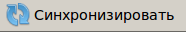
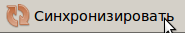

Все данные журнала хранятся на сервере компании. Клиент загружает их при запуске и отображает в своем окне. После ввода новой информации (события) необходимо произвести синхронизацию

Для этого нужно нажать на кнопку "Синхронизировать"
Если в программе есть несинхронизированные (новые) данные, кнопка "Синхронизировать" становится красного цвета:

Если пользователь планирует работать в отсутствие доступа к серверу компании, необходимо сохранить данные с сервера в локальный файл. Для этого необходимо:
Получив доступ к серверу, необходимо загрузить файл с результатами работы (с помощью пункта меню "Файл: Открыть") и произвести синхронизацию с сервером кнопкой "Синхронизировать"